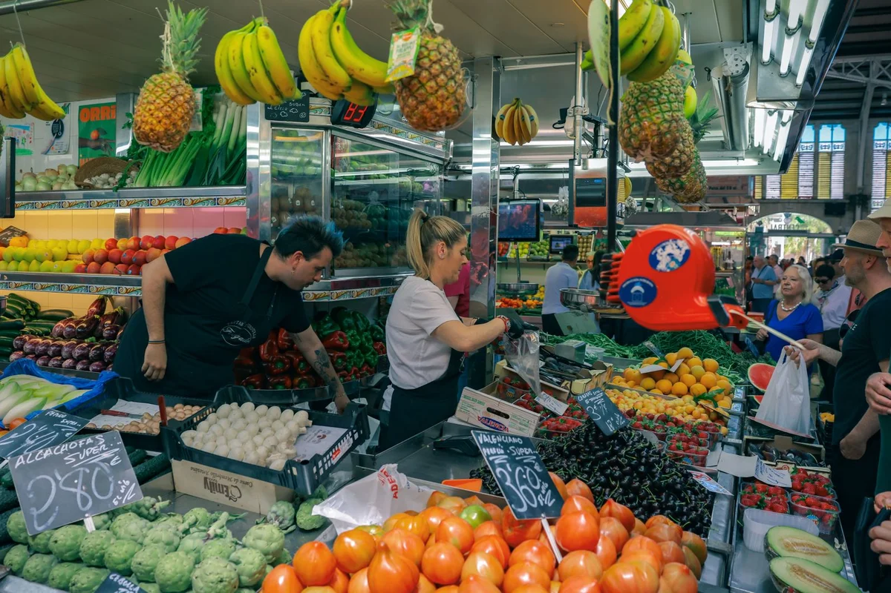
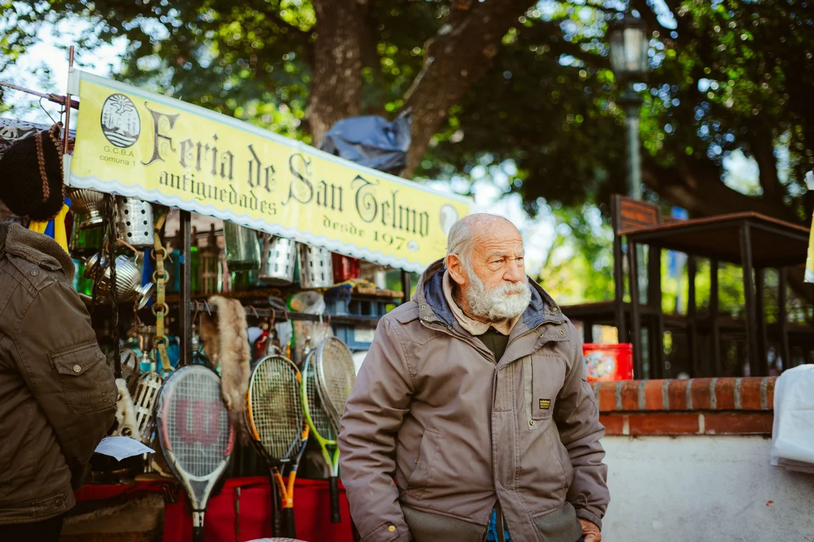

Introduction
Every expat guide to Seville eventually gets around to the same advice: move to Macarena, it is 'authentically local,' it is 'untouched by tourism,' it is affordable and full of character. All of that is broadly true. But the framing misses something important, and if you are genuinely planning to build a life in living like a local in Seville's Macarena as an expat, you deserve a more honest picture than the one being sold by relocation blogs in 2026.
Macarena is not a hidden gem waiting to be discovered. It is a working neighbourhood of roughly 85,000 people with its own politics, its own social tensions, its own noise and beauty. It has been changing faster than most of those guides acknowledge, partly because of the same expats and digital nomads who read those guides and move there. That is not a moral judgement; it is simply the context you need before signing a lease.
This guide takes a different approach. Instead of telling you Macarena is perfect, it tells you what Macarena actually costs, how it actually functions day to day in 2026, where the genuine friction points are, and where it genuinely exceeds expectations. It is written for people who want to integrate, not just relocate.
The Neighbourhood Nobody Actually Lives In (Versus the One You Will)
The Macarena of travel content is a series of Instagram frames: the Basílica de la Macarena at dusk, old men playing dominoes on Calle Feria, a glass of manzanilla on a plastic table outside a bar with no English on the menu. That version exists. It is also the version every English-language relocation site leads with, which means it is increasingly the version being sought by people who then transform it.
The Macarena you will actually live in is considerably more complex. It is the largest district in Seville by population, divided informally into several distinct sub-zones: the area closest to the old city walls (from Puerta de Córdoba to Puerta Macarena) tends to attract more visitors and short-term renters; the area north of Calle Resolana, stretching toward San Luis and the Alameda de Hércules border, is where daily life happens at a quieter frequency.
For practical purposes, if you are looking at apartments in 2026, pay close attention to which sub-zone you are actually renting in. The difference between a flat on Calle Feria (lively, noisy, increasingly tourist-adjacent) and one on Calle San Luis or deeper into the barrio toward the northern residential streets is meaningful in terms of both price and actual quality of daily life.
The contrarian take: Macarena's greatest asset in 2026 is not that it is undiscovered. It is that it is large enough to still have pockets that function entirely outside the expat economy. Finding those pockets takes more than reading a guide; it takes walking the neighbourhood for a week before committing to anything.
What Things Actually Cost in Macarena in 2026
Most cost-of-living summaries for Seville quote a monthly budget of €1,200 to €1,800 for a single person. That range is technically accurate and almost entirely useless without context. Here is a more granular breakdown specifically calibrated to Macarena in 2026.
Rent: A one-bedroom flat in Macarena proper (not a studio, not a coliving space) runs between €750 and €950 per month in 2026 for a decently maintained apartment. Anything below €700 now signals either a serious maintenance issue or a very northern location close to the SE-30 ring road. Two-bedroom flats for couples or sharers sit between €950 and €1,250. Note that the Spanish rental market changed significantly after the 2023 housing law; landlords are now legally limited in how much they can increase rent on existing contracts, but new contracts in high-demand zones can still reset to market rate.
Groceries: Shopping at Mercado de la Feria or Mercado de la Encarnación for fresh produce, meat and fish, a single person cooking at home can eat very well on €180 to €250 per month. Supplementing with a nearby Mercadona (there are two within reasonable walking distance of central Macarena) keeps the total realistic.
Eating and drinking out: The menú del día (three courses, bread, drink) at a neighbourhood bar in Macarena runs €10 to €13 in 2026. This is not the cheapest in Seville (some southern barrios still offer them at €9), but it is well below what you would pay in Triana or the historic centre. A proper dinner out with wine sits at €22 to €35 per person depending on the venue. A glass of draught beer or a small wine at a local bar costs €1.50 to €2.50.
Transport: Seville's urban bus and metro card (Tarjeta Multiviaje) costs around €7 for 10 journeys in 2026. Most of Macarena is walkable to the historic centre in 15 to 25 minutes; a bicycle is arguably the single best transport investment you can make in this city. The city's Sevici bike-share system costs €33 per year for unlimited 30-minute journeys.
Utilities: Electricity, water and gas for a one-bedroom flat averages €80 to €130 per month depending on season (Seville summers are brutal; air conditioning is not optional). High-speed broadband runs €25 to €35 per month with providers like Movistar or Orange.
Realistic monthly total for a single person: €1,300 to €1,700, with comfort rather than austerity as the baseline. Below €1,200 is possible with a room in a shared flat and very careful habits, but it involves trade-offs most working expats would rather avoid.

Mercado de la Feria: What the Food Guides Miss
Mercado de la Feria, on Calle Feria, is invariably described as Seville's most authentic surviving market. The 18th-century backstory is accurate; the organic produce and fresh fish are real. What the food guides rarely mention is the social architecture of the place, which is at least as interesting as the produce.
The market operates on a regulars economy. The vendors know their customers by name, by family situation, by culinary preference. Showing up as a newcomer and expecting immediate warmth is setting yourself up for a mildly awkward first few visits. The path to actual integration is boring but effective: arrive at the same time (ideally between 9:00 and 10:30am, Tuesday to Saturday), buy from the same two or three stalls for the first month, and deploy basic Spanish with patience. After four to six weeks, the dynamic shifts noticeably.
Practically speaking: the butcher stalls at Mercado de la Feria consistently offer better value than supermarkets for quality cuts; the fish section is best visited on Tuesday, Thursday and Saturday when deliveries are freshest; the small prepared-food vendors (there are three or four stalls selling hot food at lunchtime) represent some of the best-value eating in the entire barrio at around €4 to €7 for a full plate.
A lesser-known alternative for produce shopping is the small street market that sets up on Calle Correduría and surrounding streets on Thursday mornings. Less photogenic, more genuinely local, and with prices that are typically 10 to 15 percent lower than Mercado de la Feria for equivalent fruit and vegetables.
The Unwritten Rules of Daily Life in Macarena
Living like a local in Macarena is not primarily about which bar to go to. It is about tempo. Seville runs on a schedule that is genuinely different from northern European or North American rhythms, and Macarena, as a working neighbourhood rather than a tourist zone, enforces those rhythms more strictly than anywhere else in the city.
Noise and the siesta culture: The afternoon quiet period (roughly 2:30pm to 5:00pm) is taken seriously in residential streets. Dragging furniture, loud phone calls in stairwells, or running washing machines during this window will generate friction with neighbours faster than almost anything else you can do. This is not a quaint custom; in the summer heat, when temperatures in Seville regularly exceed 38°C and have been hitting 42°C in recent years, the midday shutdown is a genuine survival adaptation.
Community communication: Most Macarena buildings have a WhatsApp group for residents (comunidad de vecinos). Getting added to this group is one of the most useful things a new expat can do; it is where everything from building maintenance updates to neighbourhood events to lost-cat notices appears. Ask your landlord or a neighbour to add you within the first week.
When to shop, when to eat: Supermarkets are quietest between 10:00am and 12:30pm. The menú del día window is 2:00pm to 4:00pm at most bars; arriving at 4:15pm and expecting a full menu will disappoint. Evening tapas culture kicks in around 8:30pm to 9:00pm and runs until midnight on weekdays, later on weekends. Dinner before 9:00pm at a local bar will mark you as a tourist more reliably than any amount of bad Spanish.
Semana Santa changes everything: In spring 2026, as every year, Semana Santa (Holy Week, landing in late March or early April depending on the calendar) essentially closes Macarena for normal daily functioning for eight days. Given that the Hermandad de la Macarena, one of the most famous and emotionally significant brotherhoods in all of Spanish Catholic culture, is based in this very barrio, the week is an intense, moving, occasionally overwhelming experience. Streets are blocked, noise levels at certain hours are extraordinary, and the neighbourhood transforms completely. For expats who have just arrived, this can feel disorienting. For those who have been there a year or more, it becomes one of the singular things about living in this specific place.

Healthcare, Admin and the Stuff Nobody Mentions Until It Goes Wrong
Healthcare access in Seville is through the Andalusian public health system (Servicio Andaluz de Salud, or SAS). EU citizens registering as residents can access this system after completing empadronamiento (municipal registration) at their local Junta Municipal de Distrito. Non-EU expats on non-lucrative visas or digital nomad visas need to show proof of private health insurance to satisfy visa conditions, but can still register with SAS once residency is established.
The nearest health centre (Centro de Salud) for most of Macarena is Centro de Salud Macarena on Avenida de la Cruz Roja. Appointments for non-urgent GP visits typically take 3 to 7 days; for anything urgent, the walk-in urgent care (Urgencias) function operates daily.
Empadronamiento is the foundational bureaucratic act. Without it, almost nothing else works: you cannot open a Spanish bank account easily, you cannot access public services, and you have no proof of address for any official purpose. The process requires an in-person appointment, a valid passport, and your rental contract. Make this your first administrative priority; do not wait until you need it.
One practical detail that regularly catches new arrivals off guard: most Spanish banks require a Spanish phone number for online banking verification, and many SIM-only phone contracts require a bank account. The circular dependency is real but solvable: N26 or Revolut can serve as interim solutions while you establish local banking; Lidl and some newsagents sell prepaid SIMs with cash, no bank account required.
Where Macarena Actually Outperforms the Hype
Having spent some time pushing back against the uncritical enthusiasm of most Macarena coverage, it is worth being equally direct about where the neighbourhood genuinely delivers.
Walkability and human scale: Macarena is one of the few neighbourhoods in a large Spanish city where you can run essentially your entire daily life on foot. The market, the pharmacy, the hardware shop, the post office, the bar where you become a regular: all of these exist within 10 to 15 minutes of almost any address in the barrio. This is not a small thing. It is the difference between a city that feels like a collection of errands and one that feels like a community.
The bar ecosystem: Macarena's tapas bar culture is genuinely distinct from the sanitised version that operates in tourist zones. Places like El Rinconcillo (technically on the boundary with the historic centre but claimed by Macarena regulars) and dozens of unmarked neighbourhood bars on streets like Calle Arrayán or around Plaza del Pumarejo operate without any awareness of what food media thinks of them. The food is good because the clientele is local and demanding, not because a guide recommended them.
Green space proximity: This is consistently underrated in expat commentary. The Parque del Alamillo, a 105-hectare park on the Isla de la Cartuja, is accessible from northern Macarena by bike in under 15 minutes. For a neighbourhood inside a dense urban fabric, this access to genuine parkland (not a manicured plaza) is unusual and valuable, particularly in the brutal heat of a Seville summer.
The creative community: Macarena has quietly accumulated a significant concentration of artists, architects, designers and musicians over the past decade. This is not yet the kind of thing that generates lifestyle features, but it creates a social texture that makes the neighbourhood genuinely interesting beyond its surface aesthetics. The area around La Imperdible cultural space and the independent bookshops and studios on the streets north of Alameda de Hércules reflects this quietly.
Final Thoughts
Macarena in 2026 is not the neighbourhood it was five years ago, and it will not be the neighbourhood it is today in five years from now. That is not a warning; it is simply what happens to urban places that people genuinely want to live in. The question is not whether to live there, but how to do it with enough awareness to participate rather than merely consume.
The expats who integrate most successfully into Macarena are not the ones who arrive with the most Spanish or the most money. They are the ones who slow down enough to learn the rhythms before trying to change them, who shop where their neighbours shop, who learn the name of the person behind the counter at the market, who sit with the discomfort of being the outsider long enough to stop being one.
None of that is unique to Macarena. But Macarena, for all its current flux, still offers enough genuine neighbourhood infrastructure and human scale to make that kind of integration possible. In many European cities, that opportunity has already closed. In this corner of Seville, at least for now, it has not.
If this guide helped you see Macarena more clearly, share it with someone who is weighing up the move. The more people arrive with realistic expectations, the better it tends to go for everyone.
Frequently Asked Questions
Is Macarena in Seville safe for expats in 2026?
Yes, Macarena is considered safe for daily life by the overwhelming majority of expats and locals who live there. Like any large urban neighbourhood, it has streets that feel more comfortable than others after dark, particularly in the northernmost sections closer to the ring road. Standard urban awareness applies. The area around Calle Feria and Plaza del Pumarejo is lively and well-used at most hours. Petty theft (pickpocketing in crowded areas) is the most common issue reported, as in any Spanish city centre.
What is the average rent in Macarena Seville in 2026?
A one-bedroom apartment in Macarena in 2026 typically costs between €750 and €950 per month for a decently maintained flat. Two-bedroom apartments for sharers or couples range from €950 to €1,250. Prices vary considerably depending on the specific street and how recently the flat was renovated. The closer to Calle Feria and the old city walls, the higher the price. Northern Macarena toward the ring road offers more space for less money.
Is Spanish necessary to live in Macarena Seville?
Practically speaking, functional Spanish is important in Macarena in a way it is simply not in more tourist-facing neighbourhoods like Santa Cruz. While most younger residents have some English, the daily infrastructure of the barrio (the market, the local bars, the health centre, the building administration) operates predominantly in Spanish. Basic conversational Spanish and a willingness to improve will determine much of your experience. Unlike some expat-heavy cities, Macarena does not offer a comfortable English-language bubble.
What is the best market to shop at in Macarena Seville?
Mercado de la Feria on Calle Feria is the most established and best-stocked market in the barrio, with a history going back to the 18th century. It operates Tuesday to Saturday, mornings only, and is strongest for fresh fish, meat and local produce. A smaller and less touristic alternative is the Thursday morning street market on Calle Correduría, which tends to offer lower prices on fruit and vegetables. For everyday grocery staples, two Mercadona supermarkets are accessible on foot from most of Macarena.
How do I register as a resident in Macarena Seville (empadronamiento)?
Empadronamiento (municipal registration) is done in person at the Junta Municipal de Distrito de Macarena. You will need a valid passport (and NIE if you have one), your signed rental contract showing your address, and an appointment booked through the Seville city council website (sede.sevilla.org). Processing typically takes one to three weeks. This registration is the foundational step for accessing healthcare, opening a bank account, and meeting visa conditions in Spain.